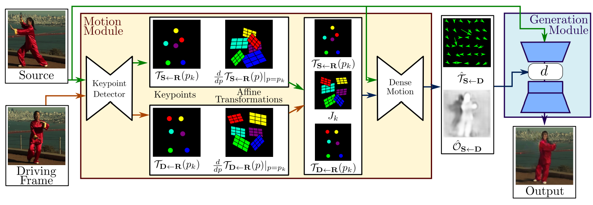

最近，”蚂蚁雅黑”又火了一波，在B站搜索”蚂蚁雅黑”，映入眼帘的是这样的场景
它利用某种技术 ，可以让一张静态图片动起来，无论是影视人物的画像，还是活在古画里的历代皇帝，甚至动漫人物，雕塑人物，只要有一份参考视频做参考，他们就统统都能动起来，而且毫无违和感。
本文分为两部分，第一部分主要介绍上面提到的某种技术 ，第二部分手把手教你生成这种神奇的视频。
对于理论不感冒的小伙伴，也可以直接划到动手实践部分进行阅读。
对了，按照本文操作生成的视频已经放在文末，欢迎围观，哈哈哈~
理论讲解 
整个框架由两部分组成：运动估计模块(Motion Module)和图像生成模块(Generation Module)。
用一段话来描述整个框架在做的事情：
输入的数据包括原图像 (Source)和驱动视频 (Driving Frame)，这两部分数据被输入关键点检测器 (Keypoint Detector，它是一个编解码器网络)，以提取关键点(Keypoint)，这里的关键点包含两部分：源图像中的关键点+驱动视频中的关键点；接着，这些关键点通过仿射变换 (Affine Transformations)，得到一阶运动表示(first order motion representation)；将刚刚得到的一阶运动表示输入密集运动网络 (Dense motion network) ，输出两个东西：从驱动视频到源图像的密集光流 ( dense optical flow)$Tˆ_{S←D}$ 和遮挡图 ( occlusion map)$Oˆ_{S←D}$；最后，将密集运动网络的输出的这两个东西和源图像一起输入生成器以渲染 (render)目标图像，也就是我们最终想要的输出结果 (Output)。
有几点需要说明一下：
上图中，$Tˆ_{S←R}$和$Tˆ_{D←R}$中的$R$是作者假设存在的一个参考系，并且作者独立的估计了两个转换(映射)，也就是图中的$Tˆ_{S←R}$和$Tˆ_{D←R}$，分别代表”参考系到源图片”和”参考系到驱动视频”之间的映射;
采用局部仿射变换对每个关键点附近的运动进行建模，与只使用关键点位移相比，能够建模一个更大的变换族 ( family of transformations);
作者使用一阶泰勒展开 ( first order Taylor expansion)，通过一组关键点位置和仿射变换来表示$Tˆ_{S←D}$，这可能就是论文名字First Order Motion Model for Image Animation 的由来吧；
遮挡图$Oˆ_{S←D}$用来指明驱动视频中的哪些图像部分可以通过扭曲源图像来重建(未被遮挡的部分将被重建)，哪些部分应该被绘制(被遮挡的部分将被绘制)；
再看一下损失函数：
重建损失 ：
其中，$I$是特征图数量，$N_i$代表第$i$个特征图，这些特征图都是从 VGG-19的层中得到。另外，作者还将此loss应用在不同分辨率的图像上(下采样得到)，这是常见的金字塔结构，在之前我们推送的ProGAN中就使用过了(传送门)。
**等差约束(Equivariance Constraint)**：
由于关键点预测器在训练期间不需要任何关键点注释，这可能会导致性能不稳定。等差约束是驱动无监督方式发现关键点的最重要因素之一，它迫使模型预测与已知几何变换一致的关键点。
对于更具体的细节讲解，有兴趣的小伙伴可以去阅读原论文，我已经放在文末啦。现在要进入动手环节啦，一起让图片动起来吧~
动手实践 第一步，去往https://github.com/AliaksandrSiarohin/first-order-model ，点击Code，再点击Download ZIP，将整个项目下载到本地，如下图：
第二步，将刚刚下载好的压缩包解压到任意某个地方，进入解压后的文件夹，我的解压路径如下图：
第三步，在当前文件路径下打开cmd或者Power Shell(方法：*左手按住Shift，单击鼠标右键，点击“在此处打开 Power Shell 窗口” *)，输入:
1 pip install -r requirements.txt
第四步，下载预训练权重，作者提供了多个权重文件以及素材，不过需要科学上网才能获取，所以我把本文需要用到的预训练模型和素材上传到了云端，下载地址：https://pan.baidu.com/s/1XOk_HV63noaW1dLd0PhC7g 提取码：ewzk
接下来就开始训练了，这里提供两种方法，推荐version2！
version1 第五步，在终端运行如下命令：
1 python demo.py --config config/vox-256. yaml --driving_video 04. mp4 --source_image 05. png --checkpoint vox-cpk.pth.tar --relative --adapt_scale
如果你遇到：
1 ImportError: To use the imageio ffmpeg plugin you need to 'pip install imageio-ffmpeg
只需执行安装一下imageio-ffmpeg即可，命令如下：
1 pip install imageio-ffmpeg
等待一会儿，视频就生成好了，它被存放于当前目录下，叫做result.mp4
version2 第五步，在终端输入jupyter notebook，进入 Jupyter Notebook，新建一个.ipynb文件，复制粘贴以下代码，运行即可：
1 2 3 4 5 6 7 8 9 10 11 12 13 14 15 16 17 18 19 20 21 22 23 24 25 26 27 28 29 30 31 32 33 34 35 36 37 38 39 40 41 42 43 44 45 46 47 48 49 50 51 52 53 54 55 56 57 import imageioimport numpy as npimport matplotlib.pyplot as pltimport matplotlib.animation as animationfrom skimage.transform import resizefrom IPython.display import HTMLimport warningswarnings.filterwarnings("ignore" ) source_image = imageio.imread('05.png' ) reader = imageio.get_reader('04.mp4' ) source_image = resize(source_image, (256 , 256 ))[..., :3 ] fps = reader.get_meta_data()['fps' ] driving_video = [] try : for im in reader: driving_video.append(im) except RuntimeError: pass reader.close() driving_video = [resize(frame, (256 , 256 ))[..., :3 ] for frame in driving_video] def display (source, driving, generated=None ): fig = plt.figure(figsize=(8 + 4 * (generated is not None ), 6 )) ims = [] for i in range (len (driving)): cols = [source] cols.append(driving[i]) if generated is not None : cols.append(generated[i]) im = plt.imshow(np.concatenate(cols, axis=1 ), animated=True ) plt.axis('off' ) ims.append([im]) ani = animation.ArtistAnimation(fig, ims, interval=50 , repeat_delay=1000 ) plt.close() return ani from demo import load_checkpointsgenerator, kp_detector = load_checkpoints(config_path='config/vox-256.yaml' , checkpoint_path='vox-cpk.pth.tar' ) from demo import make_animationfrom skimage import img_as_ubytepredictions = make_animation(source_image, driving_video, generator, kp_detector, relative=True ) imageio.mimsave('generated.mp4' , [img_as_ubyte(frame) for frame in predictions], fps=fps) HTML(display(source_image, driving_video, predictions).to_html5_video())
如果遇到：
1 RuntimeError: Requested MovieWriter (ffmpeg) not available
直接执行以下命令即可：
1 conda install -c conda-forge ffmpeg
这样，生成的视频就被保存为generated.mp4，它只包含源图像转换后的结果：
当然，在Jupyter Notebook的界面中，会展示生成的视频，它既包含源图像，还包含驱动视频和生成的视频：
你可以直接右键将视频保存到本地。
以上便完成了我们的目标：生成假视频。
如果你不满足于此，还想控制更多关于生成视频的细节，请继续往下看~
如果你只想要驱动视频和生成视频，而不想显示源图像，可以稍微改一下上面的那一大段代码，我已经改好了，直接复制，替换掉之前的那一大段代码即可：
1 2 3 4 5 6 7 8 9 10 11 12 13 14 15 16 17 18 19 20 21 22 23 24 25 26 27 28 29 30 31 32 33 34 35 36 37 38 39 40 41 42 43 44 45 46 47 48 49 50 51 52 53 54 55 56 57 58 59 import imageioimport numpy as npimport matplotlib.pyplot as pltimport matplotlib.animation as animationfrom skimage.transform import resizefrom IPython.display import HTMLimport warningswarnings.filterwarnings("ignore" ) source_image = imageio.imread('05.png' ) reader = imageio.get_reader('04.mp4' ) source_image = resize(source_image, (256 , 256 ))[..., :3 ] fps = reader.get_meta_data()['fps' ] driving_video = [] try : for im in reader: driving_video.append(im) except RuntimeError: pass reader.close() driving_video = [resize(frame, (256 , 256 ))[..., :3 ] for frame in driving_video] def display (driving, generated=None ): fig = plt.figure(figsize=(8 + 4 * (generated is not None ), 6 )) ims = [] for i in range (len (driving)): cols=[] cols.append(driving[i]) if generated is not None : cols.append(generated[i]) im = plt.imshow(np.concatenate(cols, axis=1 ), animated=True ) plt.axis('off' ) ims.append([im]) ani = animation.ArtistAnimation(fig, ims, interval=50 , repeat_delay=1000 ) plt.close() return ani from demo import load_checkpointsgenerator, kp_detector = load_checkpoints(config_path='config/vox-256.yaml' , checkpoint_path='vox-cpk.pth.tar' ) from demo import make_animationfrom skimage import img_as_ubytepredictions = make_animation(source_image, driving_video, generator, kp_detector, relative=True ) imageio.mimsave('generated.mp4' , [img_as_ubyte(frame) for frame in predictions], fps=fps) HTML(display( driving_video, predictions).to_html5_video())
运行上述代码，你的Jupyter Notebook界面显示的结果就只包含驱动视频和生成视频了：
还没结束，我又将上面的那段代码修改了一下，使其能够生成多张源图像的视频，并最终将它们合成一个视频，代码如下，主要是在原代码基础上做了些批量化操作，你直接复制粘贴即可：
1 2 3 4 5 6 7 8 9 10 11 12 13 14 15 16 17 18 19 20 21 22 23 24 25 26 27 28 29 30 31 32 33 34 35 36 37 38 39 40 41 42 43 44 45 46 47 48 49 50 51 52 53 54 55 56 57 58 59 60 61 62 63 64 65 66 67 68 69 70 71 72 73 74 75 76 77 78 import imageioimport numpy as npimport matplotlib.pyplot as pltimport matplotlib.animation as animationfrom skimage.transform import resizefrom IPython.display import HTMLimport warningswarnings.filterwarnings("ignore" ) source_image1 = imageio.imread('05.png' ) source_image2 = imageio.imread('got-04.png' ) source_image3 = imageio.imread('got-05.png' ) source_image4 = imageio.imread('cartoons.png' ) source_image1 = resize(source_image1, (256 , 256 ))[..., :3 ] source_image2 = resize(source_image2, (256 , 256 ))[..., :3 ] source_image3 = resize(source_image3, (256 , 256 ))[..., :3 ] source_image4 = resize(source_image4, (256 , 256 ))[..., :3 ] sources=[source_image1,source_image2,source_image3,source_image4] reader = imageio.get_reader('04.mp4' ) fps = reader.get_meta_data()['fps' ] driving_video = [] try : for im in reader: driving_video.append(im) except RuntimeError: print ('error' ) pass reader.close() driving_video = [resize(frame, (256 , 256 ))[..., :3 ] for frame in driving_video] from demo import load_checkpointsgenerator, kp_detector = load_checkpoints(config_path='config/vox-256.yaml' , checkpoint_path='vox-cpk.pth.tar' ) from demo import make_animationfrom skimage import img_as_ubytepredictions=[] for s in sources: pred = make_animation(s, driving_video, generator, kp_detector, relative=True ) predictions.append(pred) def display (sources, driving, generated=None ): fig = plt.figure(figsize=(8 + 4 * (generated is not None ), 6 )) ims = [] for j in range (len (sources)): for i in range (len (driving)): cols = [] if j%2 ==0 : cols.append(driving[i]) if generated is not None : cols.append(generated[j][i]) else : if generated is not None : cols.append(generated[j][i]) cols.append(driving[i]) im = plt.imshow(np.concatenate(cols, axis=1 ), animated=True ) plt.axis('off' ) ims.append([im]) ani = animation.ArtistAnimation(fig, ims, interval=50 , repeat_delay=1000 ) plt.close() return ani HTML(display(sources, driving_video, predictions).to_html5_video())
在生成视频时，需要等待一会儿~
最后得到的生成视频中，大家都动起来啦(偷笑)
如果你想添加更多的人物，只需在上述代码中虚线框起来的对应位置重复一下代码即可，比如，我现在又添加了一张图像a.png，那么虚线内代码修改如下:
1 2 3 4 5 6 7 8 9 10 11 12 13 14 15 source_image1 = imageio.imread('05.png' ) source_image2 = imageio.imread('got-04.png' ) source_image3 = imageio.imread('got-05.png' ) source_image4 = imageio.imread('cartoons.png' ) source_image5 = imageio.imread('a.png' ) source_image1 = resize(source_image1, (256 , 256 ))[..., :3 ] source_image2 = resize(source_image2, (256 , 256 ))[..., :3 ] source_image3 = resize(source_image3, (256 , 256 ))[..., :3 ] source_image4 = resize(source_image4, (256 , 256 ))[..., :3 ] source_image5 = resize(source_image5, (256 , 256 ))[..., :3 ] sources=[source_image1,source_image2,source_image3,source_image4,source_image5]
这里，我将生成的视频保存在了桌面。
最后，来给生成的视频配上一段音乐吧~
首先去找一段音乐，下载到本地。当然，你刚刚从网盘下载的文件里面已经有一段音乐了，你也可以用它。
现在，进入网盘下载好的ffmpeg\bin文件夹下，在这里打开终端，输入：
1 .\ffmpeg -i C:\Users\fanxi\Desktop\fakevideo.mp4 -i C:\Users\fanxi\Desktop\youdiantian.mp3 -c:v copy -c:a aac -strict experimental output.mp4
两个-i后面接着的分别是你生成的视频所在路径(比如我的已经在桌面了)和你准备好的音乐所在路径(我也放桌面了)。
执行上述命令后，很快，你的ffmpeg\bin文件夹下就有了output.pm4，这就是最终的生成视频啦
最后，让我们一起欣赏一下这段视频吧~
emm，配乐《有点甜》。。。
视频需要去微信观看，关注微信公众号南极Python 即可。